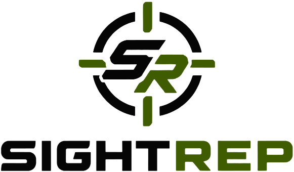

Hold your phone. Breathing, eye and brain drills. Every answer is a tap.


Reps for your eyes.
Then add it to your home screen and delete this old icon. Your settings start fresh there; your leaderboard scores are safe. Use the same leaderboard name to keep them together.
Hold your phone. Breathing, eye and brain drills. Every answer is a tap.
Set your phone down. React to the signal and cut to the right spot.
Visual reaction and cognitive warm-up. Not a medical or diagnostic tool.
A short focus and reaction warm-up with two sides. Pick the one that fits where you are.
Focus · Eyes, mind, breath
Hold your phone. Every answer is a tap, so reaction time and accuracy are measured. Use it in the locker room, on the bus, or anywhere you can't run. Tap how you feel (Flat, Ready or Wired), then a preset: Quick and Standard run Game Ready in 5 or 8 minutes, Game Speed runs it on Hard. Single parts, Extras and My Routine are under Advanced.
Game Day or Training (the switch at the top of each side). On game days, Game Ready is short and calm and ends easy (5–8 minutes). On other days, Training runs 10–15 minutes, harder, with the visual skills and more decision work in Move. Real gains come from Training 2–4 days a week for 4+ weeks; each side shows a simple weekly streak on this phone.
Focus Check (optional, Settings; Training mode only): about 30 seconds of taps at the start and end of a Training session. It compares today only with your own earlier checks on this phone, because touch timing differs between phones. If you're slower than usual, it offers the lighter version. It's a readiness check, not a medical test.
Extras (Stroop, math, memory, head turns, object tracking) are optional. They're fun, but generic brain games carry over to sport only weakly, and object tracking on its own hasn't carried over to game play in studies, so they're not part of Game Ready.
Drills get harder as you get them right and ease off after misses, aiming at about 8 in 10 right: challenged, not crushed. This phone remembers each drill's level. Low contrast (Settings) fades the cues, like poor light or glare.
Move · React, cut, compete
Set your phone down on a stand or the ground, facing you. Big signals tell you where to go; cut to the right cone, fast. You never touch the phone during a set: taps are ignored, and holding a finger on the screen for a second pauses. Use it on the field during warm-up, with the brightness all the way up.
Three presets on the same cones: Quick (2 short sets), Standard and Game Speed (game pace, full rest). Tap one and a countdown gives you time to set the phone down. Under Advanced, Custom setup has every option and Signals Only needs no cones at all. Use a clear, flat space and warm up before high-speed cuts.
Decision Layer (optional): some cues need a quick decision before you cut, like odd or even, a color word, or the opposite cone. Thinking while moving carries over best, so it's worth turning on once plain cues feel easy. Planned drills (5-10-5, square, T-drill) train change-of-direction speed on a route you know; Reactive drills train agility, which is closer to what games demand.
Every FOCUS session is shuffled. This phone remembers which scripts, problems and cue words you saw in your last few sessions and rests them for a while. No results or personal info are kept.
A focus, reaction and readiness warm-up. Not a medical, vision or concussion assessment.
Paused